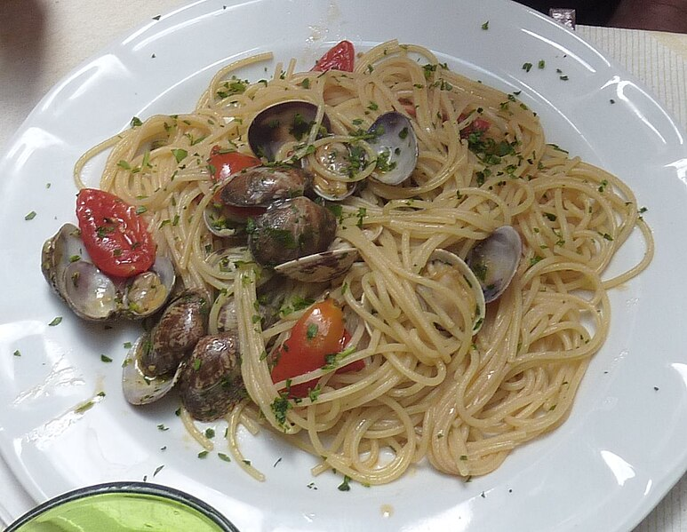

back to menu
Spaghetti alle Vongole
Simple ingredients, incredible taste. Requires a bit of effort but it's totally worth it.
Satisfying summer dish made to impress.

Ingredients for two people:
You can find everything at the grocery store.
- 5 Tbsp of Olive oil: Generous amount of Olive oil. This is basically a Pasta "Aglio e olio" (garlic and oil) with clams.
- 200g of Pasta: Use long pasta like spaghetti or linguine.
- 300/400g of Clams: You can either use fresh or frozen clams. Get the ones with the shell still on.
- 3 cloves of Garlic:
- 1 Red Chili Pepper: It doesn't have to be super spicy. We need this to build depth of flavor. Can be either fresh or dried, but fresh works the best.
- 100g of Cherry Tomatoes: A deliciously sweet variety of small tomatoes.
- 5g of Basil: The traditional recipe usually uses Parsley and you can do that too, but I personally prefer Basil for the added aroma.
How to make it
Depending on your clams, you'll have to clean them first. For fresh clams you have to purge out the sand, scrub and rinse. If you got frozen clams then you're good to go. Oil in the pan and heat to medium while your water pot boils. Lightly fry the cherry tomatoes with the garlic and the chili pepper. When the tomatoes get soft, add the clams and cover. Wait for them to open up and then set aside. Half cook your pasta, then throw it in the pan to finish cooking with the sauce on medium to high heat. Garnish with minced basil.
Step by step:
- Purge sand from the clams by soaking them in salted water for 30 minutes to an hour, then thoroughly clean them and rinse with water. Skip if using frozen clams.
- Set a pot of water to boil. We are going to half cook the pasta and then finish it off in the sauce.
- Take a pan and put it on medium heat and wait for it to get hot.
- Now that your pan is hot, pour a generous amount of olive oil then add 3 cloves of garlic and a chopped chili pepper in. Stir fry for a bit to infuse the oil.
- Add the cherry tomatoes whole with a pinch of salt and let cook until they get a bit softer.
- Your water should be boiling now. Just salt the pot with 1 and 1/2 tsp of salt and drop in your pasta.
- Add in the clams and cover. You'll want to stir once in a while. You'll know the clams are ready when every shell opens up releasing their liquid. Don't worry if the sauce looks too liquid at this point. That's where the pasta is going to finish cooking.
- When the pasta is half done, keep a cup of starchy pasta water and drain the pot.
- Drop the pasta in the sauce pan on medium-high heat and keep stirring to finish cooking. Add some of the leftover pasta water if needed.
- Chop your basil.
- When the pasta has finished cooking, mix in the basil and toss a couple times. Drizzle with olive oil and serve.
Full of flavour, packs a punch. I love this dish.
back to menu